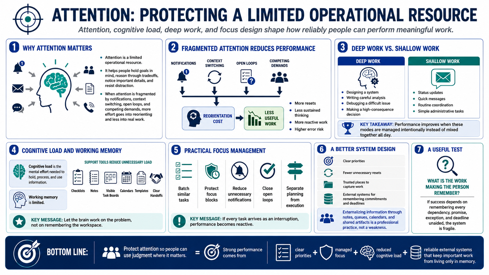

Attention, Focus, and Cognitive Load
Connecting to LMS... Progress: in progress

Narration
Attention is a limited operational resource. It allows people to hold goals in mind, reason through tradeoffs, notice important details, and resist distraction. When attention is fragmented by notifications, context switching, open loops, and competing demands, the brain spends more effort reorienting and less effort doing the actual work.
Deep work and shallow work both have a place. Deep work requires sustained focus, such as designing a system, writing a careful analysis, debugging a difficult issue, or making a high-consequence decision. Shallow work includes status updates, quick messages, routine coordination, and simple administrative tasks. Performance improves when these modes are managed intentionally instead of mixed together all day.
Cognitive load is the mental effort required to hold, process, and use information. Working memory is limited, so systems should not force people to remember every next step, dependency, decision, and deadline. Checklists, notes, visible task boards, calendars, templates, and clear handoffs reduce unnecessary load. The goal is to let the brain work on the problem, not on remembering the workspace.
Practical focus management includes batching similar tasks, protecting focus blocks, reducing unnecessary notifications, closing open loops, and separating planning from execution. If every task arrives as an interruption, performance becomes reactive. A better design gives people clear priorities, fewer unnecessary resets, and trusted places to capture work that should not be held in memory.
A useful test is to ask what the work is making the person remember. If success depends on remembering every dependency, promise, exception, and deadline unaided, the system is fragile. Externalizing that information through notes, queues, calendars, and shared artifacts is not weakness. It is a professional way to protect attention for the work that requires judgment.